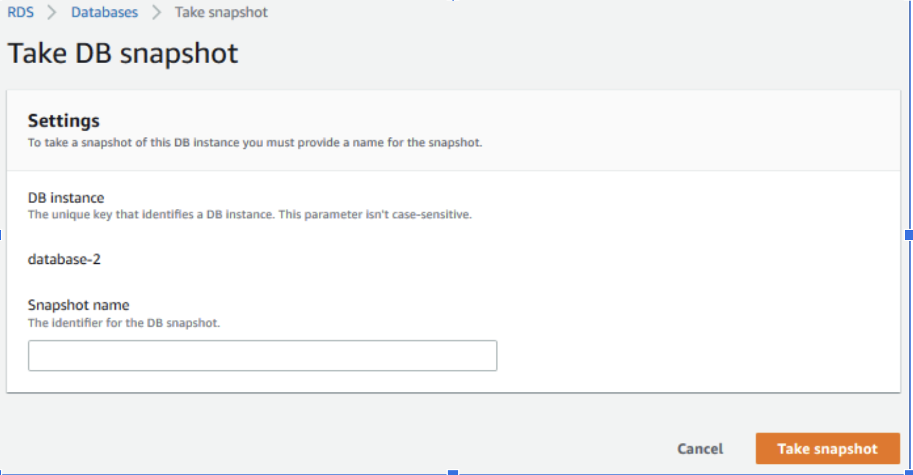
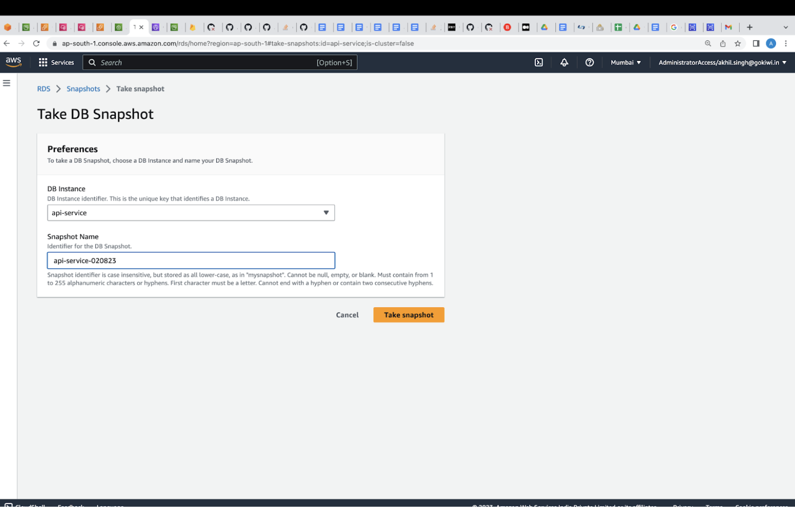
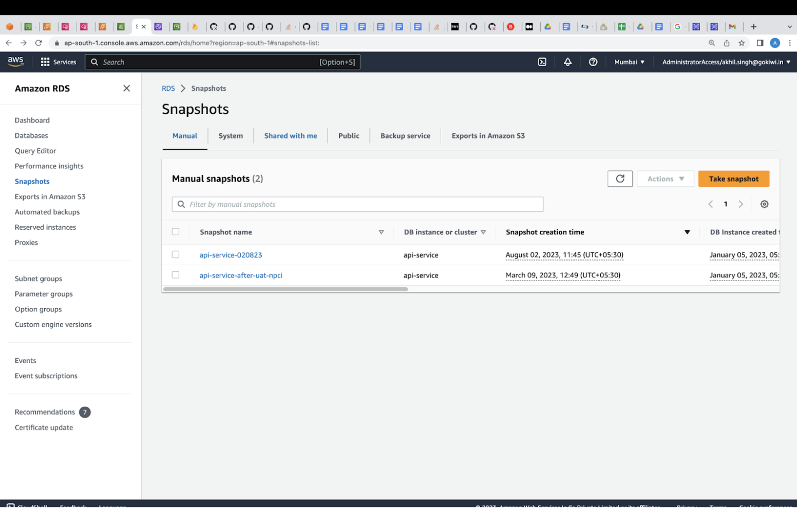
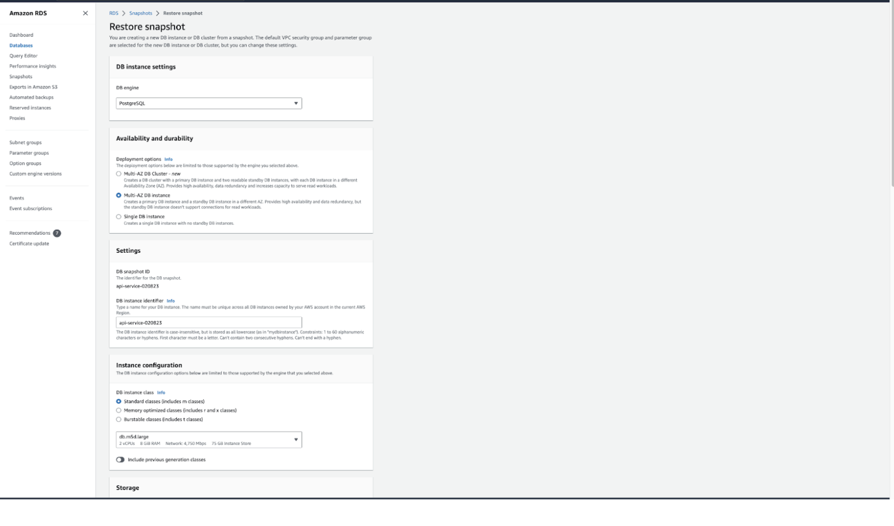
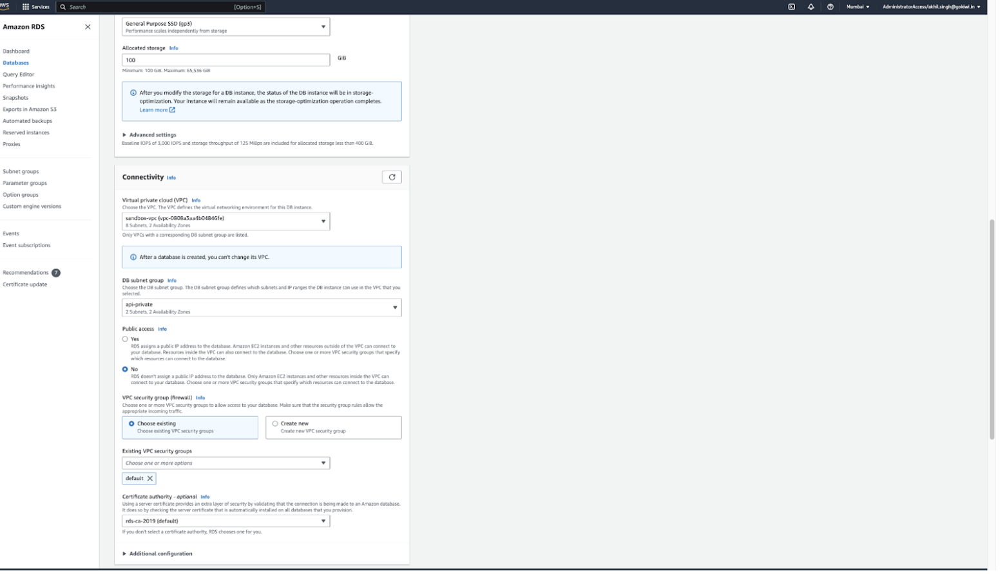
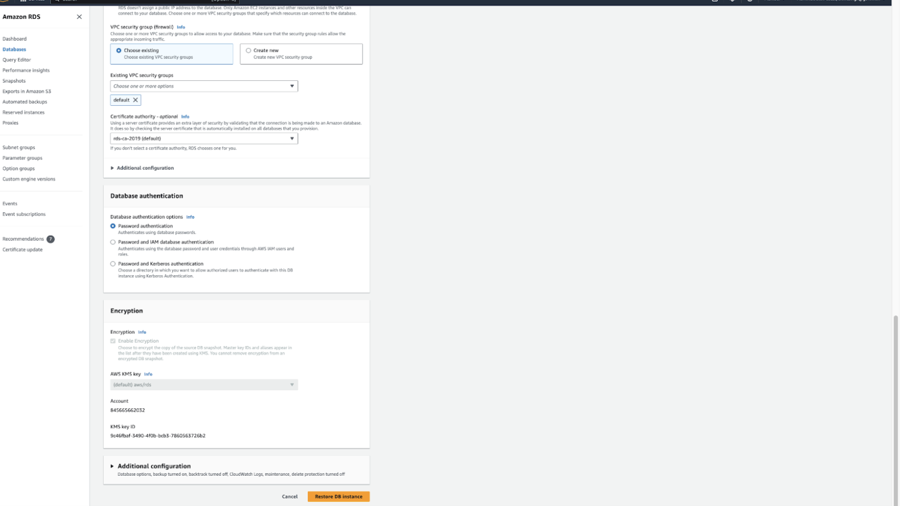
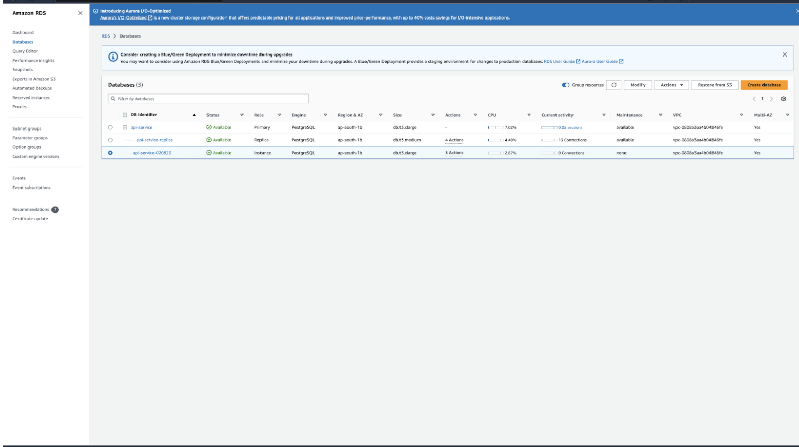

RDS Database Backup and Restore Activity

1. Introduction This procedure outlines Backup and Restore Activity.
● Backup Restore Activity done for RDS
● Snapshots are taken and RDS is restored from the Snapshots
● Snapshots are manual as well as automated
2. Objective Amazon RDS creates a storage volume snapshot of your DB instance, backing up the entire DB instance and not just individual databases. Creating this DB snapshot on a Single-AZ DB instance results in a brief I/O suspension that can last from a few seconds to a few minutes, depending on the size and class of your DB instance.
3. Scope The scope of this policy includes describing the backup and restore activity.
4. Responsibility
i. The Devops Team is responsible for the handling of Backup Activity.
ii. The designated Infrastructure staff is/are responsible for monitoring the process to ensure data security is reviewed as scheduled and that any issues arise are addressed e.g. CTO is responsible for the overall management of the process.
5. References i. AWS Documentation
6. Steps
To create a DB snapshot
1. Sign in to the AWS Management Console and open the Amazon RDS console at https://console.aws.amazon.com/rds/.
2. In the navigation pane, choose Databases.
3. In the list of DB instances, choose the DB instance for which you want to take a snapshot.
4. For Actions, choose Take snapshot. The Take DB snapshot window appears.
 5. Enter the name of the snapshot in the Snapshot name box.
6. Choose Take snapshot.
The Snapshots page appears, with the new DB snapshot status shown as Creating. After its status is Available, you can see its creation time.
To restore a DB instance from a DB snapshot
1. Sign in to the AWS Management Console and open the Amazon RDS console at https://console.aws.amazon.com/rds/.
 2. In the navigation pane, choose Snapshots.

3. Choose the DB snapshot that you want to restore from.
4. For Actions, choose Restore snapshot.

5. On the Restore snapshot page, for DB instance identifier, enter the name for your restored DB instance.
6. Specify other settings, such as allocated storage size. For information about each setting, see Settings for DB instances.
7. Choose Restore DB instance.